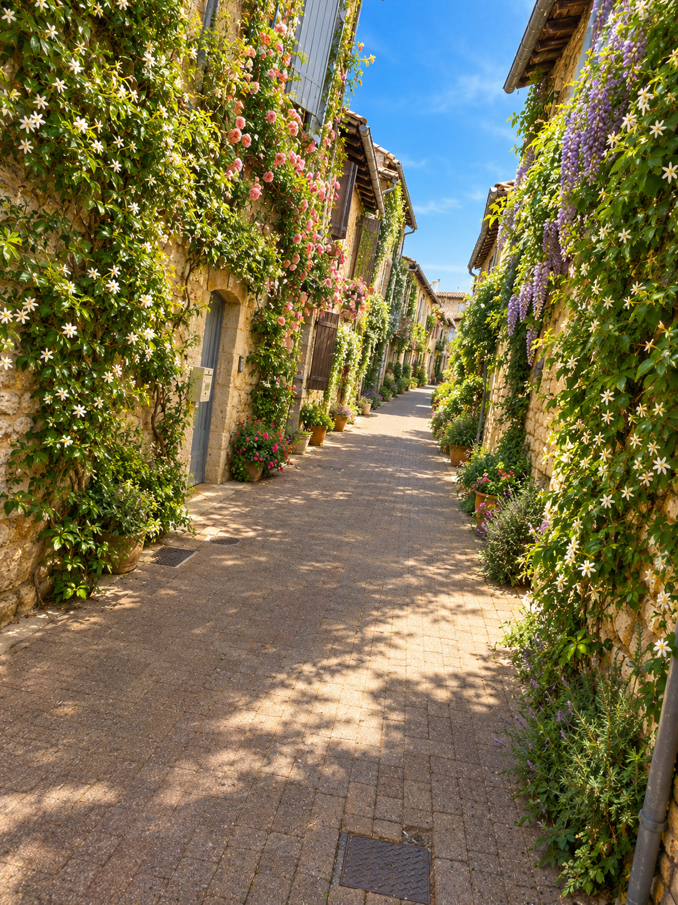
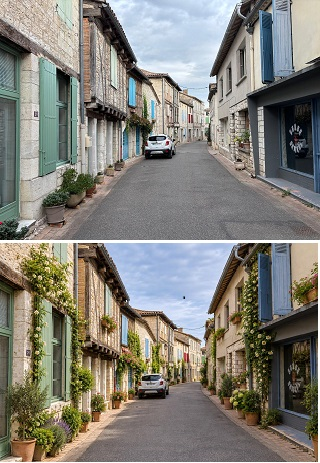
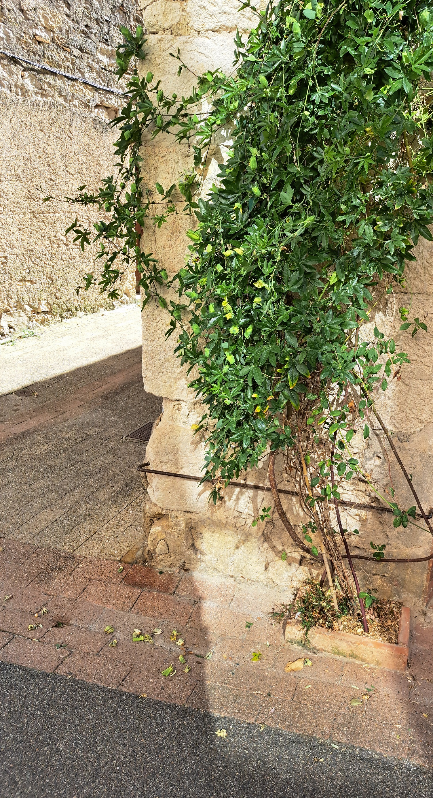

L'objectif est de développer massivement la végétalisation dans le village, notamment au pied des façades. Une démarche collective pour apporter davantage d'ombre, de fraîcheur dans nos rues.
Des plantes grimpantes sur les façades permettent, avec une faible emprise au sol, d'assurer la végétalisation espérée.

L'idée est simple : la commune aménage l'espace public et crée les conditions pour planter en pleine terre, les habitants contribuent à entretenir cette végétation.
La commune et les habitants ont chacun leur rôle.
La municipalité prend en charge les travaux nécessaires sur le domaine public : étude de l'emplacement, vérification des réseaux, création de la fosse de plantation et aménagement sur le domaine public.
Les habitants qui souhaitent participer s'engagent, de leur côté, à faire vivre les plantations : arrosage, entretien courant, taille et signalement des éventuels problèmes.


C'est un véritable partenariat : la commune aménage, les habitants entretiennent et, ensemble, nous faisons grandir la végétation dans nos rues.
Les espèces et les emplacements seront choisis en tenant compte des caractéristiques de chaque rue : exposition, largeur du trottoir, réseaux enterrés, circulation des piétons et contraintes du bâtiment.
Afin de garantir la sécurité de tous et de préserver le libre passage sur les trottoirs, chaque projet sera étudié avec les services municipaux.
Chaque projet sera étudié au cas par cas afin de préserver les réseaux, la sécurité et l'accessibilité des rues.
Végétaliser sa façade peut sembler être un petit geste. Mais lorsque plusieurs maisons sont végétalisées, ce sont peu à peu des rues entières qui changent.
Faisons de Montpezat un village plus vert, plus frais et plus agréable à vivre, une façade, une plantation et un habitant à la fois.
Vous souhaitez participer ? Inscrivez-vous auprès de la mairie !